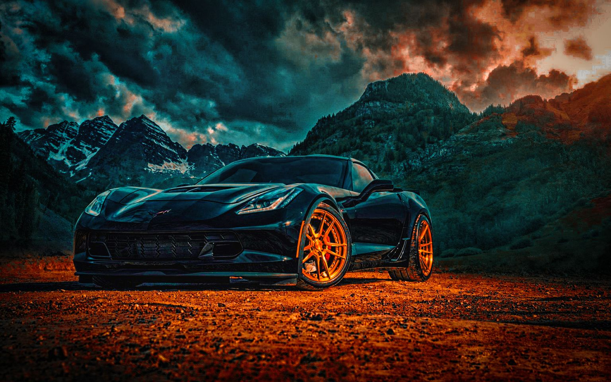

Спортивные автомобили
Общая информация
Среди типичных спорткаров можно назвать такие модели как Porsche 718 Boxster / Cayman, Jaguar F-Type, BMW Z4, Audi TT, Mercedes SLC, Toyota Supra, Alpine A110 и др. Стоимость таких машин, если мы говорим про новый спорткар из салона официального дилера, обычно довольно высока, но у них есть обратная сторона: на вторичном рынке можно без проблем найти дешевые спорткары по вполне приемлемым ценам.
Самый быстрый спорткар в мире
Koenigsegg Agera RS - 278 миль в час. Именно этот автомобиль официально признан самым быстром в мире. Министерству транспорта Невады пришлось перекрыть 11-мильную полосу маршрута между Лас-Вегасом и Пэрампом, чтобы Koenigsegg Agera RS смогла установить официальный рекорд. На дорогах общего пользования шведский суперкар мощностью 1160 л.с. разгоняется до 284,55 миль в час. SSC Tuatara - 300 миль в час.
А вот что об этом знает Википедия

Фото спортивного авто номер 1
Фото спортивного авто номер 2
Самая быстрая машина от 0 до 100 в мире
- Koenigsegg Gemera – 1,9 секунды
- Bugatti Chiron Super Sport 300+ – 2,3 секунды
- Hennessey Venom F5 – 2,4 секундыи
- Aston Martin Valkyrie – 2,5 секунд
- Mercedes-AMG One – 2,6 секунды
- Pagani Huayra Roadster BC – 2,8 секунды
Недостатки спортивных авто
- Расход топлива
- Стоимость
- сложное управление